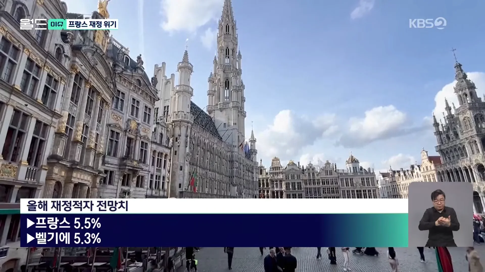

최근 유럽 경제 상황이 심각하다고 합니다. 특히 프랑스의 재정 위기가 악화되고 있는데요. 이 때문에 시위가 잦아들지 않고 있는 데다, 극우 집권 가능성은 점차 높아지고 있습니다. 황동진 기자와 자세히 분석해 보겠습니다. 프랑스 상황부터 자세히 살펴보죠. 얼마나 심각한가요?
프랑스가 내수 부진과 국채금리 상승 등으로 경제 상황이 악화하고 있습니다.
여기에 국방비 증가로 재정 건전성도 안 좋아지고 있는데요.
낭만의 도시 프랑스 파리, 크리스마스 시즌을 앞두고 샹젤리제 거리에서 점등식이 열렸습니다.
화려한 조명과 경쾌한 음악이 무색하게, 요즘 프랑스 분위기는 어둡고 무거운 편인데요.
최근 발표된 스탠더드앤드푸어스 자료에 따르면 이번 달 프랑스의 기업활동은 최근 6개월 만에 가장 낮은 수준이고요.
제조업 부문은 서비스업보다 좋지 않습니다.
고용도 7개월 연속 감소했는데요.
피치가 프랑스의 국가 신용등급을 AA-에서 A+로 하향 조정한 데 이어, 지난달 말 A+를 유지하면서도 전망을 '안정적'에서 '부정적'으로 낮췄습니다.
이 때문에 프랑스 10년물 국채 금리가 5%를 돌파하면서 2002년 이후 최고치를 기록했습니다.
프랑스의 부채 비율은 GDP 대비 119%에 달해 약 530조 원 수준입니다.
부채 규모로는 미국에 이어 세계에서 두 번쨉니다.
유럽연합 집행위원회는 지난 24일 유럽 재정 상황 평가를 발표하면서 프랑스와 벨기에에 대해 재정 위험성을 경고했습니다.
돔브로브스키스 집행위원은 최근 몇 개월 새 장기 차입 비용이 급등한 프랑스와 벨기에를 향해 "재정 운용을 지속 가능한 수준으로 올려놓아야 한다'고 비판했습니다.
프랑스와 벨기에는 올해 재정적자가 GDP 대비 각각 5.5%와 5.3%로 전망되고 있는데요.
재정적자를 GDP 대비 3%로 제한하는 EU 재정 준칙을 위반해서 긴축 계획을 내놓고 의무적으로 이행해야 합니다.
하지만, 프랑스는 지난 4일 긴축안이 의회에서 부결됐고, 벨기에에선 노조와 연립정부 내 정당 갈등으로 재정 절감안 통과가 난항을 겪고 있습니다.
프랑스에선 교육의 질 저하에 대한 학생들의 항의로 시작된 시위가 노동자 시위로 이어졌는데요.
6주 연속 이어진 주말 시위는 조금씩 잦아드는 양상이지만, 극단적인 행동을 하는 시위대가 등장해 사회적 긴장을 높이고 있습니다.
차량이 불타고 검은 복면을 한 시위대가 도심을 활보하는데요.
이들은 이른바 울트라 레프트, 극좌 시위댑니다.
공공기관 건물에 불을 지르고 기물 파손도 주저하지 않는데요.
이들은 거리 행진과 집회가 마무리되는 해질녁에 주로 등장합니다.
이들은 폭력 없이는 아무것도 달성할 수 없다며 자본주의 파괴가 목표라고 주장합니다.
벨기에서도 학생 시위가 확산하고 있고, 노동조합이 주도하는 '국가 행동의 날'을 비롯해 파업이 빈번하게 이어지고 있습니다.
유럽은 수십 년간 중도 좌파 중심으로 집권이 이뤄져 왔습니다만, 최근에는 극우 세력이 영향력을 넓히고 있습니다.
프랑스에서는 극우 정당 '국민연합'의 마린 르펜이 내년 봄 대선을 앞두고 치러진 여론조사에서 선두를 달리고 있습니다.
여론조사기관 이포프가 지난 18일 발표한 여론조사 결과를 보면 르펜의 1차 투표 지지율이 36%로, 2위인 멜랑숑의 19.5%보다 2배 가까이 높습니다.
현재 결과대로라면 내년 결선투표에서 르펜이 승리할 가능성이 높습니다.
때문에, 내년 대선에서 극우파가 집권 세력이 될 것이라고 주요 언론들은 예측하고 있습니다.
경제 상황 악화로 어려움을 겪는 유럽 대부분의 국가에서도 극우 세력들은 약진하고 있는데요.
당장 오는 29일 총선이 치러지는 스페인에서도 극우 성향의 복스당이 제1야당인 보수성향의 국민당과 손잡고, 페드로 산체스 총리가 이끄는 중도좌파 사회노동당 연정을 꺾을 것이라는 관측이 나오고 있습니다.
이미 독일과 이탈리아에서도 독일을 위한 대안, AfD와 이탈리아의 형제들 당 같은 극우 세력이 기존 정당을 물리치고 권력의 중심에 다가섰습니다.
유럽 내 국가별로 정치 지형은 조금씩 다르지만 장기간 이어진 저성장과 고물가, 재정 압박으로 기존 중도 정당의 지지 세력은 약화됐는데요.
여기에 반이민 등 극우 의제는 확산하고 트럼프 대통령의 유럽 극우 정당 지지가 맞물리면서 유럽 유권자 네 명 중 한 명은 극우 정당을 지지하는 것으로 나타났습니다.
이런 흐름은 당분간 확대될 것이라는 게 전문가들의 예측입니다.
댓글
수집 당시 댓글 185개
ㅇㅇ · 11.27 00:09:12
황족 · 11.27 00:10:59
· 모코코- · 11.27 00:13:01
· ㅇㅇ · 11.27 00:13:02
· ㅇㅇ · 11.27 00:28:10
ㅇㅇ · 11.27 00:11:34
ㅇㅇ · 11.27 00:17:30
ㅇㅇ · 11.27 00:17:38
ㅇㅇ · 11.27 00:17:40
· ㅇㅇ · 11.27 00:20:30
· 내꿈은기생수! · 11.27 00:23:02
· ㅇㅇ · 11.27 00:26:26
· ㅇㅇ · 11.27 00:47:22
ㅇㅇ · 11.27 00:20:20
ㅇㅇ · 11.27 00:23:06
ㅇㅇ · 11.27 00:24:07
내꿈은기생수! · 11.27 00:24:39
· ㅇㅇ · 11.27 00:29:14
· ㅇㅇ · 11.27 01:09:20
· ㅁㄴㅇㄹ · 11.27 01:26:16
· 1111 · 11.27 01:30:23
· ㅇㅇ · 11.27 11:29:49
ㅇㅇ · 11.27 00:28:38
타이밍뒷통수한방 · 11.27 00:28:40
딸흐앙 · 11.27 00:28:48
ㅇㅇ · 11.27 00:32:55
파치카 · 11.27 00:34:57
ㅇㅇ · 11.27 00:35:29
좌빨
등신
사이비
종교
민좆당
ㅇㅇ · 11.27 00:44:05
ㅇㅇ · 11.27 00:45:53
· ㅇㅇ · 11.27 01:53:56
· ㅇㅇ · 11.27 11:30:35
ㅇㅇ · 11.27 00:46:49
ㅇㅇ · 11.27 00:50:37
ㅁㄴㅇ · 11.27 00:51:42
· ㅁㄴㅇ · 11.27 00:56:40
ㅇㅇ · 11.27 01:00:21
ㅇㅇ · 11.27 01:01:37
ㅇㅇ · 11.27 01:04:15
ㅇㅇ · 11.27 01:06:24
ㅇㅇ · 11.27 01:20:11
ㅇㅇ · 11.27 01:24:06
· ㅇㅇ · 11.27 01:45:00
· ㅇㅇ · 11.27 11:32:53
ㅇㅇ · 11.27 01:24:19
ㅇㅇ · 11.27 01:25:47
유럽
거지
1111 · 11.27 01:29:33
· ㅇㅇ · 11.27 14:04:18
ㅇㅇ · 11.27 01:32:50
히이잉 · 11.27 01:37:22
ㅇㅇ · 11.27 01:54:42
ㅇㅇ · 11.27 01:54:46
ㅇㅇ · 11.27 02:05:25
ㅇㅇ · 11.27 02:12:00
ㅇㅇ · 11.27 02:23:48
· ㅇㅇ · 11.27 02:25:15
· ㅇㅇ · 11.27 03:41:57
· ㅇㅇ · 11.27 11:35:47
ㅇㅇ · 11.27 02:24:42
ㅇㅇ · 11.27 03:27:47
ㅇㅇ · 11.27 04:02:03
좌빨씹 KBS 가짜뉴스 ㅋㅋ
ㅇㅇ · 11.27 04:02:41
찢두로국 이나 걱정해 ㅋㅋ
ㅇㅇ · 11.27 04:04:28
· ㅇㅇ · 11.27 04:04:54
ㅇㅇ · 11.27 04:08:17
· ㅇㅇ · 11.27 04:10:01
· ㅇㅇㅇ · 11.27 09:37:12
ㅇㅇ · 11.27 04:24:32
ㅇㅇ · 11.27 04:30:14
ㅇㅇ · 11.27 05:23:55
ㅇㅇ · 11.27 05:48:22
ㅇㅇ · 11.27 06:22:39
향격쳐 · 11.27 06:46:17
ㅇㅇ · 11.27 08:58:04
ㅇㅇ · 11.27 09:25:12
ㅇㅇ · 11.27 09:30:54
ㅇㅇ · 11.27 09:49:10
ㅇㅇ · 11.27 10:08:59
ㅇㅇ · 11.27 10:22:39
주소킹 · 11.27 10:29:57
· 주소킹 · 11.27 10:30:02
ㅇㅇ · 11.27 10:47:35
· ㅇㅇ · 11.27 14:28:44
PS5 · 11.27 11:04:00
ㅇㅇ · 11.27 12:19:43
ㅇㅇ · 11.27 12:52:48
ㅇㅇ · 11.27 13:15:21
ㅇㅇ · 11.27 14:01:25
바나닉3 · 11.27 14:15:27
ㅇㅇ · 11.27 14:46:29
· ㅇㅇ · 11.27 15:57:53
· ㅇㅇ · 11.27 16:11:17
· ㅇㅇ · 11.27 16:11:27
· ㅇㅇ · 11.27 17:33:22
· ㅇㅇ · 11.27 18:05:51
ㅇㅇ · 11.27 15:06:17
ㅅㅂ · 11.27 16:11:23
ㅇㅇ · 11.27 16:22:26
영어연습중 · 11.27 16:29:49
qkfpt · 11.27 17:34:26
모코코- · 11.26 23:55:34
· 호시노히나타 · 11.26 23:56:40
· 모코코- · 11.26 23:59:25
· ㅇㅇ · 11.26 23:59:59
· ㅇㅇ · 11.27 00:00:06
· 황족 · 11.27 00:10:43
· ㅇㅇ · 11.27 00:12:53
· ㅇㅇ · 11.27 00:26:35
봇치쟝 · 11.26 23:55:39
실베도로롱 · 11.26 23:56:42
· 실베도로롱 · 11.26 23:57:29
· ㅇㅇ · 11.26 23:59:52
· ㅇㅇ · 11.27 00:27:17
Vooqqqqld · 11.26 23:58:37
ㅇㅇ · 11.26 23:58:41
· ㅇㅇ · 11.27 00:15:27
· ㅇㅇ · 11.27 01:09:59
· ㅇㅇ · 11.27 01:26:43
ㅇㅇ · 11.26 23:59:42
· 실베도로롱 · 11.27 00:01:06
· 모코코- · 11.27 00:12:53
· 황족 · 11.27 00:15:41
· ㅇㅇ · 11.27 00:27:40
· ㅇㅇ · 11.27 00:54:23
ㅇㅇ · 11.27 00:01:07
신 석 열 · 11.27 00:01:40
ㅇㅇ · 11.27 00:01:53
· 신 석 열 · 11.27 00:02:50
ㅇㅇ · 11.27 00:02:13
· ㅇㅇ · 11.27 01:14:58
ㅇㅇ · 11.27 00:02:49
· ㅇㅇ · 11.27 00:05:04
· ㅇㅇ · 11.27 00:05:20
· ㅇㅇ · 11.27 00:13:02
· ㅇㅇ · 11.27 00:13:34
· ㅇㅇ · 11.27 01:54:16
· ㅇㅇ · 11.27 01:56:44
ㅇㅇ · 11.27 00:03:10
ㅇㅇ · 11.27 00:03:24
히이잉 · 11.27 00:03:30
ㅇㅇ · 11.27 00:03:49
ㅇㅇ · 11.27 00:04:45
ㅇㅇ · 11.27 00:05:07
· ㅇㅇ · 11.27 00:06:27
· ㅇㅇ · 11.27 00:07:41
· ㅇㅇ · 11.27 00:07:55
· ㅇㅇ · 11.27 00:10:42
· ㅇㅇ · 11.27 00:11:35
· ㅇㅇ · 11.27 00:11:50
· ㅇㅇ · 11.27 00:12:23
· ㅇㅇ · 11.27 00:13:25
· ㅇㅇ · 11.27 00:14:27
· ㅇㅇ · 11.27 00:15:15
· ㅇㅇ · 11.27 00:16:20
· ㅇㅇ · 11.27 00:18:01
· ㅇㅇ · 11.27 00:18:26
· ㅇㅇ · 11.27 00:18:42
· ㅇㅇ · 11.27 00:18:53
· ㅇㅇ · 11.27 00:19:22
· ㅇㅇ · 11.27 00:19:27
· ㅇㅇ · 11.27 00:19:55
· ㅇㅇ · 11.27 00:20:47
· ㅇㅇ · 11.27 00:21:22
· ㅇㅇ · 11.27 00:22:09
· ㅇㅇ · 11.27 00:22:33
· ㅇㅇ · 11.27 00:22:58
· ㅇㅇ · 11.27 00:23:18
· ㅇㅇ · 11.27 00:23:59
· ㅇㅇ · 11.27 00:24:01
· ㅇㅇ · 11.27 00:24:52
· ㅇㅇ · 11.27 00:25:20
· ㅇㅇ · 11.27 00:26:21
· ㅇㅇ · 11.27 01:58:47
· ㅇㅇ · 11.27 02:01:30
· ㅇㅇ · 11.27 02:09:37
· ㅇㅇ · 11.27 05:55:58
· ㅇㅇ · 11.27 07:52:03
· ㅇㅇ · 11.27 07:52:48
· ㅇㅇ · 11.27 07:53:26
· ㅇㅇ · 11.27 07:54:52
· ㅇㅇ · 11.27 08:05:53
· ⛩️⛩️⛩️ · 11.27 09:11:45
ㅇㅇ · 11.27 00:07:26
· ㅇㅇ · 11.27 00:08:22
· ㅇㅇ · 11.27 00:08:36